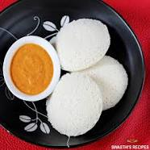

Idly

About
Idli is a traditional South Indian dish that is popular throughout India and across the world. It is a savory steamed cake made from a fermented batter consisting of rice and black lentils (urad dal). Idlis are typically served for breakfast or as a snack, and they are often accompanied by various side dishes such as sambar (a lentil-based vegetable stew), coconut chutney, or tomato chutney.
Ingredients
- 2 cups of idli rice (parboiled rice)
- 1 cup of urad dal (black gram lentils)
- 1 teaspoon fenugreek seeds
- Salt to taste
- Water for soaking and grinding
- Oil or ghee for greasing the idli molds
Instructions
-
Preparation
- Rinse the idli rice and urad dal separately under running water until the water runs clear.
- Soak the rice and urad dal separately in enough water for about 4-6 hours.
- Add fenugreek seeds to the urad dal while soaking.After soaking, drain the water from both the rice and urad dal.
-
Grinding the batter
- In a wet grinder or a high-powered blender, grind the soaked urad dal until it becomes a smooth and fluffy batter. You may need to add a little water while grinding to achieve the desired consistency. The batter should be thick and airy.
- Transfer the urad dal batter into a large bowl.Now grind the soaked rice into a smooth paste. The texture should be slightly coarse compared to the urad dal batter.
- Mix the rice batter with the urad dal batter, adding salt to taste. Combine well using your hands or a spatula. The batter should be thick but pourable.
-
Fermentation
- Cover the bowl with a clean kitchen towel or plastic wrap and let it ferment in a warm place for about 8-12 hours or overnight. During this time, the batter will rise and become slightly airy.
-
Making Idlis
- After fermentation, gently mix the batter to deflate any air bubbles that may have formed.
- Grease the idli molds with a little oil or ghee.
- Pour ladlefuls of the batter into each mold, filling them about 3/4 full.
- Steam the idlis in a steamer for about 10-12 minutes or until they are cooked through. You can check the doneness by inserting a toothpick or a knife into the center of an idli - it should come out clean.
- Once done, remove the idli molds from the steamer and let them cool for a couple of minutes.
- Use a spoon or a butter knife to gently remove the idlis from the molds.
-
Serving
- Serve the idlis hot with sambar, coconut chutney, or any other accompaniment of your choice.
Enjoy Your Homemade Idlis!!
Go To Home